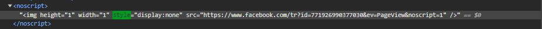
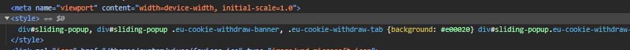
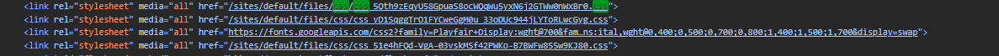
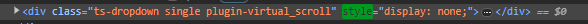
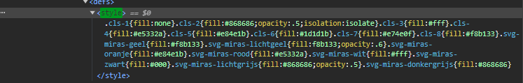
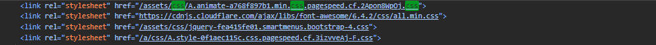

Bekijk de onderstaande pagina's op het labo document. En noteer telkens op welke manier(en) ze de bijbehorende CSS-regels introduceren (zie ook labo document)
Pagina 1:
www.vives.be
inline style attributen?
Zoals je ziet bij de afbeelding heeft de vives pagina gebruik gemaakt van inline style attributen.

<style> blokken?
Hier zie je ook dat men ook <style> blokken hebben gebruikt in hun code.
 blokken" >
<link> verwijzingen naar aparte CSS-bestanden?
Hier zie je ook dat men gebruik maakt van <link> verwijzingen naar aparte CSS-bestanden. Ze gebruiken 4 verwijzingen.

Pagina 2:
www.miras.be
inline style attributen?
Ook de miras pagina heeft gebruik gemaakt van inline style attributen.

<style> blokken?
Je ziet op de afbeeldingen dat de miras pagina ook <style> blokken gebruikt.
 blokken" >
<link> verwijzingen naar aparte CSS-bestanden?
Je ziet op de afbeelding dat men gebruik maakt van <link> verwijzingen naar aparte CSS-bestanden. Ze gebruiken hier 4 verwijzingen.

Pagina 3:
www.vrt.be
inline style attributen?
Op de vrt pagina maakt men gebruik van inline style attributen.
<style> blokken?
Ook hier gebruikt men <style> blokken in hun code.
blokken" >
<link> verwijzingen naar aparte CSS-bestanden?
Je ziet hier ook dat men gebruik maakt van <link> verwijzingen naar aparte CSS-bestanden. Zeg ebruiken hier 2 verwijzingen.